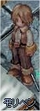
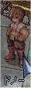
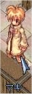
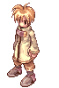
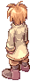

画像にリンクがはってあるものは、クリックすると別窓で大きめサイズが表示されます。
[モリペン]
所在地；アインブロックブラックスミスギルド内 |
  |
[シリア]
所在地；フィゲル1時方向建物内 |
   |
[ドノ－]
所在地；リヒタルゼン7時方向(lighthalzen:88,80) |
  |
[マキ]
所在地；リヒタルゼン貧民街の酒場(342,230)内 |
|  |
[マウォング]モリペン曰く「高い身長。顔が見えないローブ……」。 |
back
(c) Gravity Co., Ltd. & Lee MyoungJin(studio DTDS). All rights reserved.
(c) GungHo Online Entertainment, Inc. All Rights Reserved.
当コンテンツの再利用（再転載・配布など）は、禁止しています。